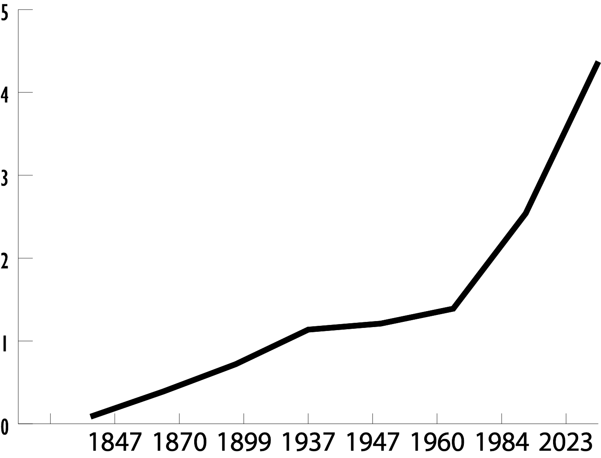
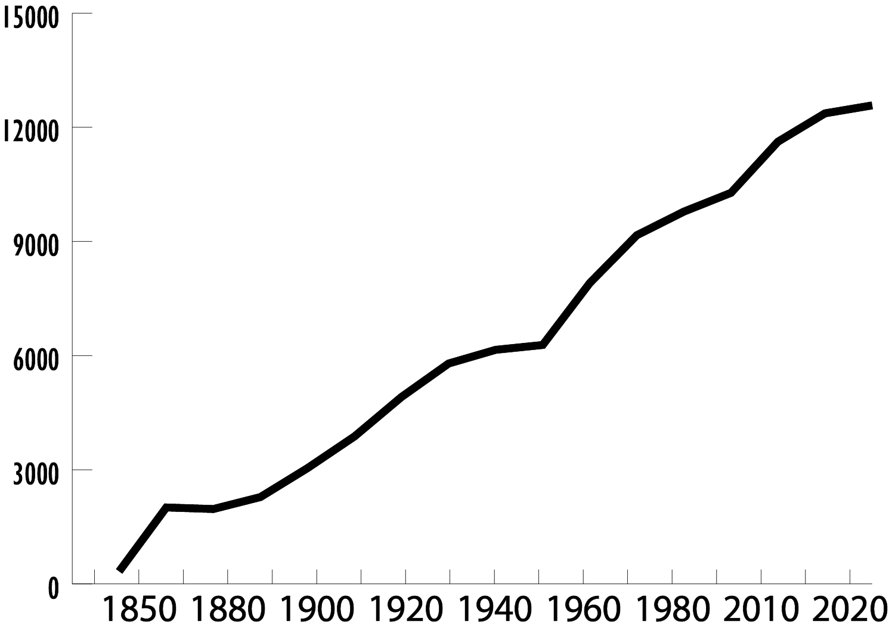

Growth of the City
According to the census, the population has grown from 334 in 1850 to 12,579 in 2022.
Between the original survey of the town and now, the developed footprint of Fort Atkinson has grown from .087 square miles to 4.368 square miles.
The map shows the expanding footprints of the town through the years.
The developed area of Fort Atkinson through the years:

1847 - 0.087 Square Miles
1870 - 0.390 Square Miles
1899 - 0.720 Square Miles
1937 - 1.137 Square Miles
1947 - 1.214 Square Miles
1960 - 1.390 Square Miles
1984 - 2.535 Square Miles
2023 - 4.368 Square Miles
The census population of Fort Atkinson through the years
